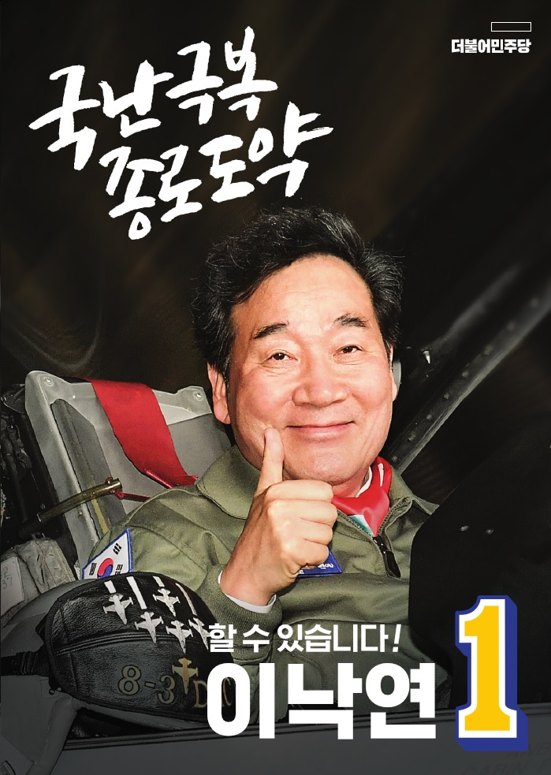
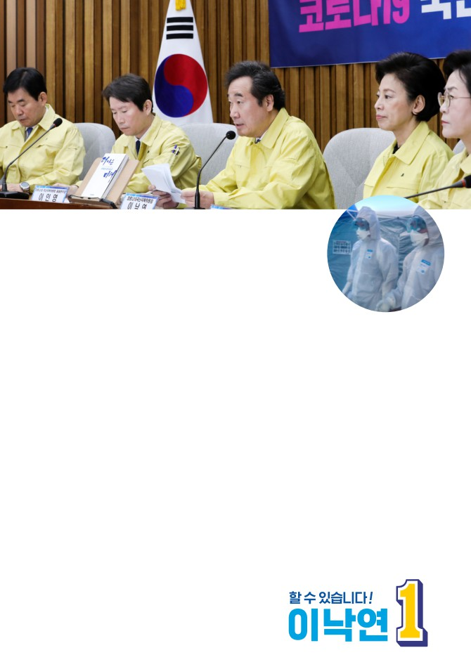
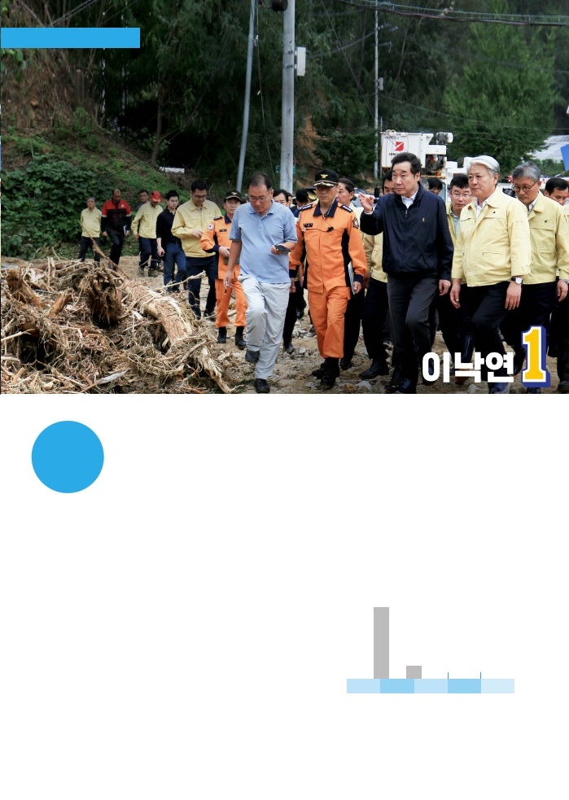
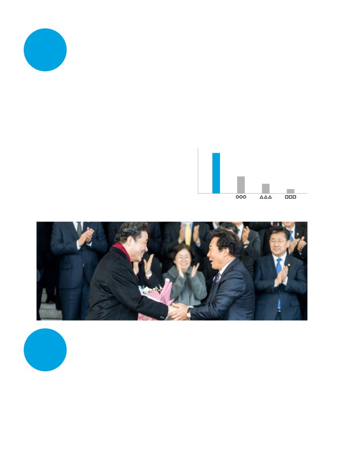
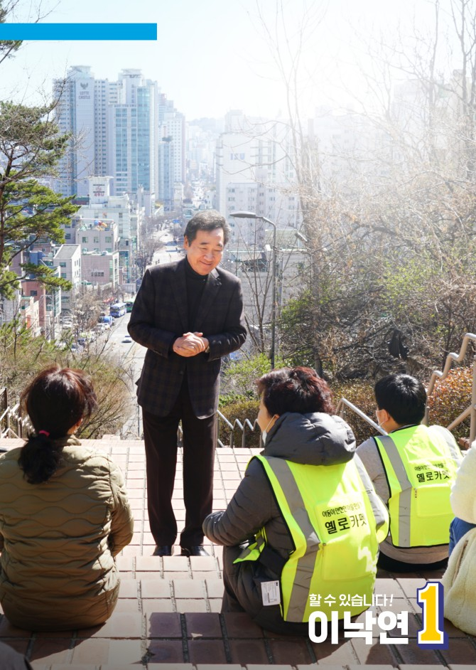
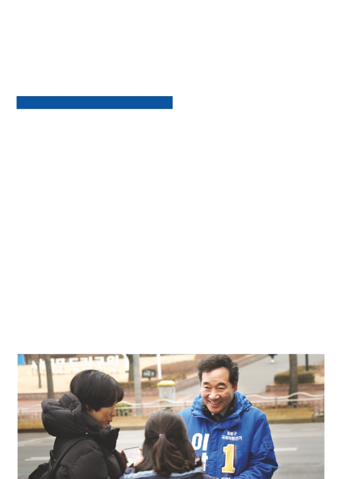
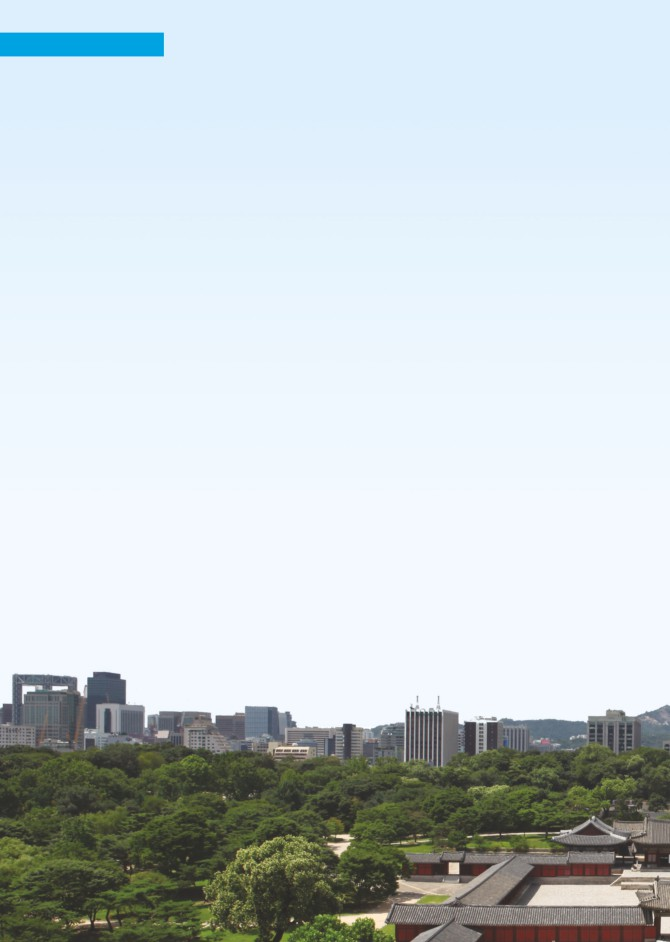
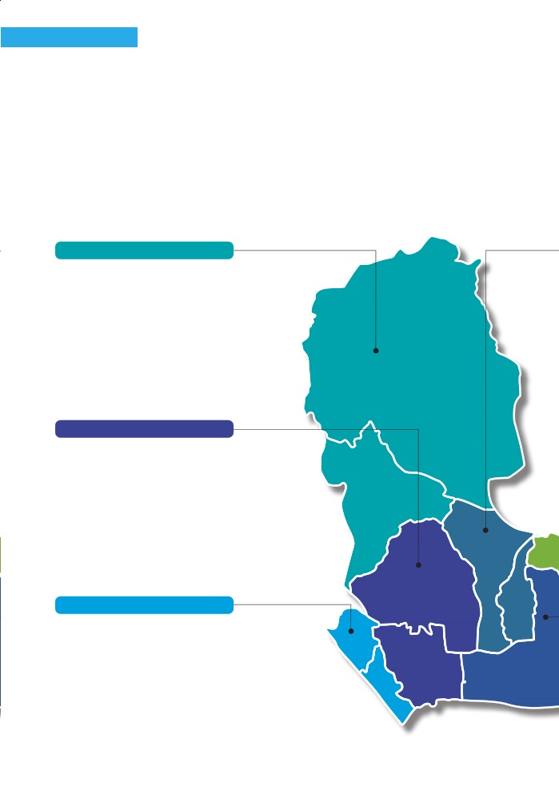
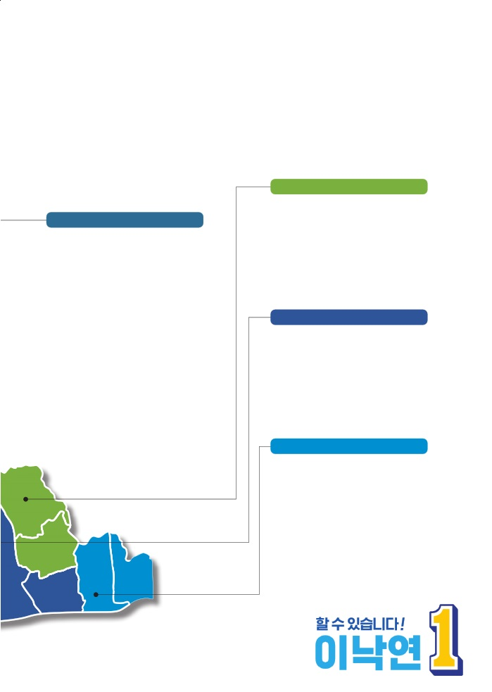
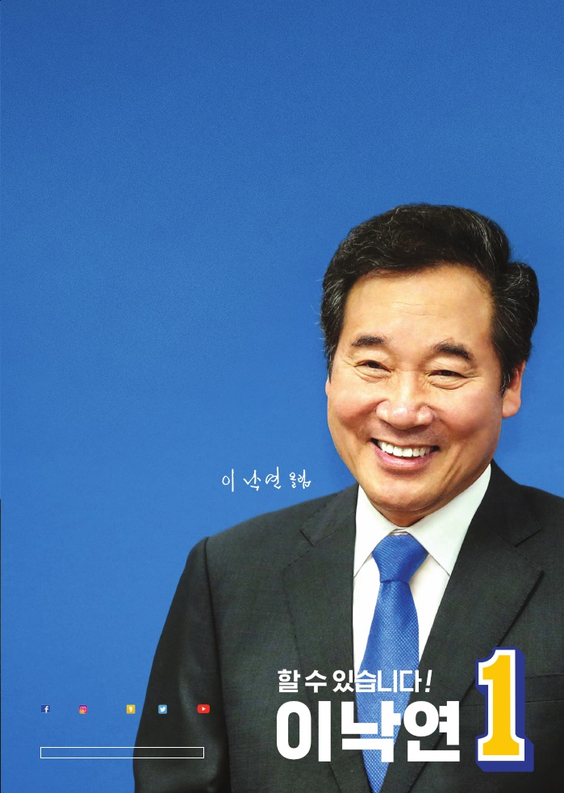

제21대 국회의원선거 종로구 선거구
책자형 선거공보
· 전라남도 영광 출생
· 서울대학교 법과대학 졸업
· 육군 병장 만기제대
· 동아일보 기자 (전)
· 4선 국회의원 (전)
· 전라남도 지사 (전)
· 국무총리 (전)
· 더불어민주당 코로나19 국난극복위원장

민주당은 왜 이낙연에게
국난극복위원장을 맡겼을까요?
코로나19는 국가적 재난입니다. 두 개의 전쟁을
수급도 안정돼 갑니다. 국민 여러분의 협조 덕분
동시에 치러야 하는 국난입니다. 코로나19를 차단
입니다. 감사드립니다.
하는 전쟁, 경제의 침체를 막는 전쟁입니다. 두 개의
그러나 전쟁은 끝나지 않았습니다. 방역은 아직
전쟁 모두를 우리는 이겨야 합니다.
계속돼야 합니다. 경제의 위축과 국민의 고통이 더
그래서 더불어민주당은 코로나19 국난극복위원회
깊어지지 않도록 해야 합니다.
를 발족하고, 그 위원장을 이낙연에게 맡겼습니다.
그러자면 정치의 지혜와 용기, 사회의 연대와 인내가
민주당은 이낙연의 역량을 믿기 때문입니다.
필요합니다. 특히 민주당과 정부는 책임 있게 결단
이낙연은 일주일에 세 차례 국난극복위원회를
하고 행동해야 합니다. 그래야 국난이 극복됩니다.
엽니다. 위원회는 코로나19와 경제를 점검하고
그 일을 이낙연이 함께합니다. 이낙연은 지혜와
대책을 세웁니다.
경험, 열정과 집념을 모두 쏟아 이 국난의 극복에
그동안 코로나19와 마스크 등으로 국민 여러분께 큰
공헌하려 합니다. 국민께서 이 고통의 계곡을 하루
걱정과 불편을 드렸습니다. 송구스럽습니다. 이제
라도 빨리 건너시도록 혼신의 노력을 다하겠습니다.
코로나19의 발병은 줄어들고 있습니다. 마스크
국민 여러분의 지도와 협력을 믿으며...

이낙연의 발자취
대통령은 왜 이낙연에게
책을 한 권 쓰라고
권했을까요?
해냈습니다 !
이낙연이 총리 업무를 마친 날,
안
문재인 대통령은 이낙연에게 재난 재해에 대처한 경험을
전
책으로 써 보라고 권유하셨습니다. 왜 그러셨을까요?
재난 이낙연과 내각은 감염병과 가축전염병을 성공적으로 막았습니다.
메르스로 2015년에 38명의 국민께서 목숨을 잃으셨습니다. 그러나 2018년 메르스 때는 인명
피해가 없었습니다.
조류독감(AI) 살처분 변화
2016년에서 2017년에 걸치는 겨울 한철에 조류독감으로
3,087만
(단위:마리)
3,087만 마리의 닭과 오리를 살처분했습니다. 그러나
1년 후엔 크게 줄었고, 지난 겨울과 이번 겨울에는
한 마리도 살처분하지 않았습니다.
653만 9천
아프리카돼지열병은 작년 10월 9일 이후 사육돼지에서
0
0
한 마리도 발생하지 않아 세계의 주목을 받았습니다.
2016년
2017년
2018년
2019년
2020년
자료: 농림축산식품부
재해 지진, 산불, 태풍에 기민하게 대처하며 재해 대응의
새로운 전례를 만들었습니다. 이낙연은 재해 발생 초기 일주일 사이에 현장을 세 차례씩 방문해
복구지원 계획을 설명하며, 이재민들께 희망을 드리려 노력했습니다. 이재민들도 호응해 주셨
습니다.

이낙연은 경제의 빛과 그림자를 살피며, 기회는 살리고
경
위험은 관리했습니다. 일본의 수출규제 같은 위기에도
제
안정적으로 대응하며 전화위복을 이끌었습니다.
현장 중시 경제에서도 현장을 중시합니다. 노동자, 소상공인, 중소기업인, 중견기업인, 대기업
인과 부단히 소통해 왔습니다. 어떤 정책도 현장이 감당하고 수용할 수 있도록 추진할 것입니다.
경제외교 총리로서 25개국을 방문, 경제외교를 펼쳤습니다. 카타르의 LNG 운반선 60척과 198억
달러 규모의 건설 인프라 사업 수주, 쿠웨이트 뉴자흐라 병원의 서울대 위탁 운영과 국내 기업
에틸렌공장의 미국 진출을 도왔습니다. 도미니카
국가 경제를 가장 잘 이끌 것 같은 인물은
에서는 14억 6천만 달러 규모의 LNG 발전소 사업
누구라고 생각하십니까?
31.2%
등을 한국 기업이 수주하도록 지원했습니다.
경제 지도자 우리 국민은 경제도 이낙연이 가장
16.5%
잘 해결할 것이라고 생각하십니다. 경제신문의
10.9%
7.4%
여론 조사에서 ‘경제를 가장 잘 이끌 것 같은 차기
이낙연
지도자’를 묻는 질문에 압도적으로 많은 국민께서
한국경제신문. 2020. 2. 23.
•그밖의 사항은 중앙선거여론조사심의위원회 참조
이낙연을 꼽으셨습니다.
올해 1월14일 이낙연의 총리 퇴임식.
강원도 삼척시 원덕읍 갈남2리 김동혁
이장님이 오셔서 꽃다발을 주셨습니다.
지난해 태풍 '미탁'의 피해복구 과정에서
몇 차례 만나면서 친구가 됐습니다.
이낙연은 늘 균형을 잡고 중용을 취하며 포용하려 노력합니다.
통
이낙연의 그런 자세는 국회 답변 등 수많은 기회에 입증됐습니다.
합
균형 이낙연은 균형과 조정을 추구합니다. 이상과 현실의 조화를 중시합니다. 고 김대중 대통령
의 명언대로 ‘서생적 문제의식과 상인적 현실감각’을 겸비하려고 노력합니다.
중용 이낙연은 극단을 싫어합니다. 어느 쪽으로도 치우치지 않으려고 애쓰며 스스로를 경계합
니다. 다른 의견도 외면하지 않고 배려하고자 합니다.
포용 사회적 약자 그 누구도 배제되지 않는 포용사회를 꿈꿉니다. 국회 보건복지위원회에서 공부
하며 입법에 동참했고, 국무총리로서 노력했습니다. 대한노인회로부터 노인복지대상을 받았습니다.

민주당과 이낙연의 약속
더불어민주당과
이낙연이
약속합니다

경제 위기를 돌파하고 국민의 삶을
끝까지 책임지겠습니다
제21대 국회의원선거 더불어민주당 정책공약
1.감염병대응체계· 공중보건 위기대응 능력 강화
6.어르신의 당당한 노후생활 보장
•질병관리본부 ‘지역본부’ 신설, 검역소 추가 설치, 검역인력
대폭 확충
•아파트 형태의 노인 공동거주 주택 공급
•감염병 전문 연구기관 설립, 감염병 전문병원 및 음압병상 확충
•어르신 일자리 4년 간 매년 10만개씩 확대
•보건의료체계 전면 개편, 공공· 민간병원 감염병 대응협력체계
강화
•기초연금 대상 모든 어르신 2021년까지 30만 원으로 인상
2.소상공인· 자영업자가 잘사는 나라
7.청년이 행복한 나라
•소상공인 매출 확대 지원 : 온라인진출 지원 및 라벨갈이 근절
•청년특임장관 신설 등 청년 목소리 정치· 사회제도 반영
•생업 안전망 확충 : 매년 1.5조 원의 소상공인 보증규모 추가 확대
•청년 취업· 창업을 위한 지원 확대 및 주거 기본권 보장
•지역상권 활성화 : ‘1기초지자체-1특화거리’ 조성
•국립대 ‘반값등록금’ 실현 등 교육비 부담 경감
3.여성폭력 OUT! 여성이 안전한 사회
8.장애인 자립생활 환경 조성
•‘스마트 여성 안심 통합 네트워크’ 구축 등을 통해
•장애인연금 수급권 단계적 확대
여성 1인 가구 불안 해소
•수요맞춤형 장애인활동지원체계 구축
•‘스토킹처벌특례법’ 제정으로 스토킹 범죄 처벌 강화
•지역사회 독립주거공간 확대 및 탈시설 자립생활 정책 강화
•디지털 성폭력 범죄 근절 대책 추진
4.더 촘촘한 아이돌봄 안전망 구축
9.정책지원, 규제혁신으로 벤처 4대강국 도약
•어린이집· 유치원 간, 국공립· 사립시설 간 격차 해소
•K-유니콘 프로젝트 가동 유망창업 지원 : 2022년까지
30개육성
•지역사회 내 시간제 보육서비스 확충
•자본시장의 벤처투자 활성화 : 벤처투자액 연 5조 원 달성
•학교와 마을이 돌보는 온종일 돌봄체계 구축
•벤처 활성화를 위한 세제지원 강화 : 소득공제 장기투자
펀드 신설
5.안전한 등굣길, 어린이 교통안전 강화
10.편리하고 활기찬 생활환경 조성
•어린이보호구역 지정· 관리대상에 ‘통학로’ 포함
•이제는 데빵(데이터 0원)시대! 전국 무료 와이파이 구축
•어린이보호구역 안전시설 개선 및 안전한 등하교 환경 조성
• 「서울 대기질 개선」 추진, 미세먼지 걱정 없는 서울 조성
•어린이 보호구역 내 무인카메라 및 신호등 3년간 전면 설치
•고용안전망 강화 등 문화· 예술인 창의적 생산활동 지원

이낙연의 약속
종로의 꿈이 이낙연의 꿈입니다
다시, 종로
역시, 종로

이낙연의 약속
종로가 다시 뜁니다
평창동, 부암동
평창동
교통 요지, 문화예술 중심으로
다시 태어납니다
■세검정 경유 신분당선 서북부 연장 추진
■상명대·평창동 경유 강북횡단선 경전철 조기 착공
■광화문광장 집회·시위 때도 대중교통 유지
■부암동 주민센터·노인복지관 복합 건립 추진
■종로 첫 청소년센터 세검정 건립 추진
■청년 창작·창업 등 지원, 자문밖 창의예술마을 활성화
■한강으로 이어지는 홍제천 산책로 조성
청운· 효자동, 사직동
부암동
주거와 교육환경이
놀랍게 달라집니다
■교통문제 해결 후 광화문광장 재조성 논의
■광화문광장 집회 시 대중교통 유지 및 소음규제 추진
■경복궁 서측 역사문화 도시재생 추진
■황학정 일대 도로환경 개선 및 주차장 조성
■아동·청소년 창의예술 교육센터 설치 추진
■옥인동, 세종대왕탄신기념관 건립 추진
삼청동
청운· 효자동
가회동
교남동, 무악동
불편한 교육환경을
획기적으로 개선합니다
■대신중고등학교 이전 반대, 학습권 보장
■초등학교 학구조정 추진, 학교 선택 확대
■독립문 초등학교 안전한 통학환경 조성
■걷기 좋은 무악건강공원 조성
■행촌 성곽마을 마을공동체 활성화
무악동
사직동
종로
교남동
1~4가동

종로가 도약합니다
이화동, 혜화동
삼청동, 가회동
역사문화는 되살리고,
쾌적한 정주환경을 지켜 드리겠습니다
■송현동 숲공원, 민속박물관 등 문화공간 조성
■정독도서관 지하 주차장 건설 추진
■북촌· 가회구역 역사문화 도시재생 추진
■북촌 주민 쾌적한 정주권 보호 대책 강화
■문화재보호구역 재산권 침해 완화
사람 살기 참 좋은 동네로
거듭납니다
■대학로를 세계적 공연문화거리로 육성 지원
■낙산공원을 공연· 미술 문화공원으로 조성
■이화사거리~청계천 직진 신호, 양방향 통행 정상화
■국민생활관 내 어린이 실내 놀이터 조성
■동숭동 백동마을 주차장 확충 추진
종로1~4가동, 종로5~6가동
종로의 특색을 담은
세계적인 명품 거리로 발전합니다
■돈화문로, 낙원상가 일대 문화거리 조성 추진
■인사동 문화지구 육성 및 활성화 지원
■글로벌 주얼리 허브 조성 지원
■문화재보호구역 재산권 침해 완화
■충신성곽마을 주거환경 개선사업 추진
창신동, 숭인동
혜화동
쾌적한 환경과 경제가 살아나는
도시재생을 펼칩니다
■창신· 숭인동 국가시범 도시재생 혁신지구 유치 추진
■창신동 채석장 명소화사업 본격 추진
■창신동(남측) 재개발구역 첨단복합창업단지 유치
■창신동 주민센터· 주차장· 행복주택 복합 건립 추진
■낙산근린공원 체육· 복지시설, 주차장 건립
■스마트앵커 설립 등 지원, 패션봉제산업특구 육성
■신설동역 숭인동 역세권, 노후주택지 복합개발 추진
■숭인동 동묘 일대, 걷고 싶은 문화거리 조성
이화동
숭인동
창신동
종로5~6가동

존경하는 종로구민 여러분,
저는 남루한 청춘을 종로구에서 보냈습니다.
대학 1학년을 효자동에서 가정교사로 먹고 자며
시작했습니다. 동숭동의 대학에 4년 다녔습니다.
그 사이에 신문로와 삼청동의 독서실, 창신동의
친구 자취방, 연건동의 선배 하숙집, 부암동의
헌 집을 전전했습니다.
많이 굶다가 대학 졸업식을 1주일 앞두고 군대에
갔습니다. 육군 카투사 병장으로 만기제대했습니다.
세종로의 신문사에 취직했습니다. 21년 동안 기자로
일하며 일본 특파원도 경험했습니다. 그 후로
4선 국회의원, 도지사, 국무총리로 일했습니다.
그렇게 종로는 제 청춘의 꿈과 아픔을 간직하며,
제 내면을 길러 주었습니다. 부족한 저에게 인생과
세상을 가르쳐 주었습니다.
그런 종로에 이제 다시 왔습니다. 제가 얻은
모든 경험과 지혜를 종로에 쏟겠습니다. 종로가
저에게 길러준 모든 것을 이제 종로를 위해 쓰고 싶습니다.
종로구민 여러분께서 그 기회를 저에게 주시기를
간절한 마음으로 호소드립니다.
경제도 교육도 문화도 교통도
다시 종로, 역시 종로
21nylee
leenakyon
nylee
nylee21
이낙연TV
발행처 제21대 국회의원선거 후보자 이낙연
선거사무소 서울특별시 종로구 273-1 3,5층 T. 02)737-0411
이 책자형 선거공보는 「공직선거법」에 따라 제작한 것입니다.